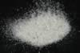

|
DOCUMENTATION_FORMAT: MINERAL
SAMPLE_ID: HS106.3B
MINERAL_TYPE: Tectosilicate
MINERAL: Bytownite (Plagioclase, Feldspar group)
FORMULA: (Na,Ca)Al(Al,Si)Si2O8
FORMULA_HTML: (Na,Ca)Al(Al,Si)Si2O8
COLLECTION_LOCALITY: Crystal Bay, Minnesota
ORIGINAL_DONOR: Hunt and Salisbury Collection
CURRENT_SAMPLE_LOCATION: USGS Denver Spectroscopy Laboratory
ULTIMATE_SAMPLE_LOCATION: USGS Denver Spectroscopy Laboratory
SAMPLE_DESCRIPTION:
Bytownite HS106.3B is a plagioclase feldspar series mineral whose end members are albite (Na) and anorthite (Ca). Bytownite falls into the 70-90% anorthite category in this series.
Sieve interval 74-250µm.
This sample shows a nice plagioclase feldspar absorption feature near 1.2 µm, but the 2.0-µm band and bands longer than about 2.3 µm are due to water from a contaminant. Roger N. Clark
IMAGE_OF_SAMPLE:

END_SAMPLE_DESCRIPTION.
XRD_ANALYSIS:
40 kV - 30 mA, 6.5-9.5 keV
File: bytwn106_mdi, *.out (smear mount on quartz plate)
References: Huebner's reference patterns, Borg and Smith (1969),
HS-201.3B (anorthite)
Comment: A moderate intensity reflection at 2.783 Angstroms is in the position of the anorthite (221) but is anomalously strong. Two very weak blips at 2.426 and 2.426 are consistent with Fe2O3 composition. Two quartz reflections [a weak (101) and strong!! (211)] are present in the coarse smear but are absent in the finely-ground material. Apparently the quartz reflections are due to non-random distribution of grains. The grains are soft. Talc
J.S. Huebner, J. Pickrell, and T. Schaefer, written communication 1994
40 kV - 30 mA, 6.5-9.5 keV
File: bytwn106_mdi, *.out (smear mount on quartz plate)
Reference: Huebner's reference patterns, Borg and Smith (1969), HS-201.3B
(anorthite)
Found: Calcic plagioclase consistent with bytownite
Comment: A moderate intensity reflection at 2.783 Angstroms is in the position of
the anorthite (221) but is anomalously strong. Two very weak blips at 2.426 and
2.426 may be background rather than reflections. Very narrow, strong bytownite
reflections indicate a high degree of crystallinity and compositional homogeneity.
END_XRD_ANALYSIS.
COMPOSITIONAL_ANALYSIS_TYPE: None # XRF, EPMA, ICP(Trace), WChem
COMPOSITION_TRACE: None
COMPOSITION_DISCUSSION:
No compositional analyses.
END_COMPOSITION_DISCUSSION.
MICROSCOPIC_EXAMINATION:
Optical examination gives the following mineral mode:
96 vol% bytownite
4 vol% sphene or garnet
avg. grain size = 290µm
Clear rectangular grains with two cleavages, and twins. Biaxial (+) G. Swayze
END_MICROSCOPIC_EXAMINATION.
SPECTROSCOPIC_DISCUSSION:
END_SPECTROSCOPIC_DISCUSSION.
SPECTRAL_PURITY: 1c2c3c4c # 1= 0.2-3, 2= 1.5-6, 3= 6-25, 4= 20-150 microns
{kind=link}